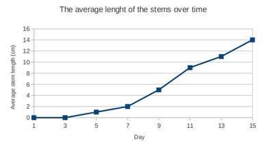

Wat moet ek doen om seker te maak dat die sade wat ek geplant het groei?
Wat het 'n plant eintlik nodig om te bly lewe en te groei?
Voorwaardes vir groei.
Wat het plante nodig om te groei?
Onthou jy dat jy van lewende en nie-lewende dinge geleer het? Ons het gesê dat omtrent alles op die aarde of lewende of nie-lewende dinge is. Vir plante en diere om lewend te wees moet hulle die sewe lewensprosesse uitvoer - onthou jy nog wat hulle is?
Plante maak al die kos wat die diere op die aarde nodig het om aan die lewe te bly. As al die plante skielik moet verdwyn sal dit nie moontlik wees om op die aarde te lewe nie. Ons moet mooi na die plante op die aarde kyk; hulle sorg vir ons.
In hierdie afdeling gaan ons spesifiek leer wat plante laat groei en wat hulle aan die lewe hou.
Wat het met die boontjiesaad gebeur wat jy in 'n vorige aktiwiteit geplant het? Hoe het jou boontjie gegroei - het dit doodgegaan of aanhou lewe? Wat dink jy het jou boontjieplant nodig om aan die lewe te bly en aan te hou groei? Bespreek dit met jou maats.
Plante het sonlig, water en lug nodig om te groei.
Sonlig
Plante het sonlig nodig om te groei en te lewe.
Groen plante gebruik sonlig, water en koolstofdioksied om kos te maak.
Die plant kan van die kos gebruik om te groei en te ontwikkel.
Dit stoor die res van die kos vir diere om te eet.
Wanneer mense en diere plante eet, kry hulle energie van die plant.
Die plant se blare gebruik sonligenergie om kos te maak en te groei. Ruspes eet die blare.
Lug
Net soos mense en diere, het plante lug nodig om te groei en te lewe. Plante gebruik koolstofdioksied om kos te maak sodat hulle kan groei.
Water
Plante het water nodig om te groei en om kos te maak. Party plante het meer water as ander nodig. Hoeveel water 'n plant nodig het, hang af van die tipe plant. As die plant nie genoeg water kry nie, sal dit doodgaan. Party plante groei in baie droë areas, soos kaktusse in die woestyn. Hierdie plante het oor baie jare aangepas (verander) sodat hulle onder die omstandighede kan oorleef.
Die wortels van die plant absorbeer water uit die grond. Hierdie water vervoer nutriënte van die grond na al die dele van die plant. Die prentjie hier onder wys hoe reëndruppels op 'n blaar versamel. Hulle val later af grond toe en sink in die grond in. Die wortels absorbeer dan die water vir die plant.
Onthou: 'n plant het water, sonlig en koolstofdioksied nodig om kos te maak.
Die meeste plante groei as hulle in die grond geplant word.
Die wortels is die plant se anker in die grond.
Hulle wortels absorbeer nutriënte uit die grond.
Om seker te maak dat plante genoeg van hierdie minerale nutriënte kry, moet ons soms kompos of kunsmis by die grond gooi. Ons sê dat grond met baie nutriënte ryk is en dat grond wat nie baie nutriënte het nie, arm is.
Plante kan oor die algemeen uit steggies of sade groei.
Sade groei uit blomme en word bevrug met stuifmeel van 'n ander blom. Sade wat bevrug is, kan ontkiem en begin groei om 'n nuwe plant te vorm.
Wanneer 'n stukkie van 'n plant (gewoonlik die stingel) afgesny word en in nuwe grond geplant word, maak mens 'n steggie. Die wortels begin groei en 'n nuwe plant vorm.
Plante kan ook uit lote groei. Lote is soos klein worteltjies wat uit spesiale deeltjies van die stingel uitgroei en in 'n nuwe plant verander.
Watter drie belangrike dinge het plante nodig om te groei?
sonlig, water, lug
Onthou jy dat een van die lewensprosesse voortplanting is? Hoe maak plante nuwe plante?
Hulle maak sade wat ontkiem en nuwe plante maak.
Hoe om die onderwerp in te lei.
Daar word aanbeveel dat hierdie praktiese opdrag oor 'n tydperk by die skool gedoen word terwyl leerders met die volgende afdeling begin. Gee jou leerders die geleentheid om die wonder van 'n nuwe plant wat uit 'n saad of steggie groei te ervaar! Laat hulle die navorsing doen; observeer en skryf die observasies oor die tydperk neer.
Wenke vir aanbieding
Die ervaring van die onderwyser sal sukses verseker. Doen die ondersoeke wat voorgeskryf is voor vra jou leerders om dit te doen. Jy sal dan beter in staat wees om leiding te bied aan jou leerders. Indien moontlik moet jy nie hierdie ondersoek in die middel van die winter doen wanneer die temperatuur baie laag is nie - dit is nie goeie omstandighede vir sade om te ontkiem nie. Gebruik verskillende boontjiesade en vind uit watter beter ontkiem. Jy moet al die voorsorgmaatreëls wat in die vorige ondersoek genoem is toepas.
Begin 'n klasbespreking deur jou leerders te vra waarom plante belangrik is. Moontlike antwoorde: Vir kos, om suurstof te gee, om die grond te beskerm (plante op duine) plante is mooi ens. Moet ons nog plante maak? Hoekom? Hoe?
Toets leerders se begrip van die volgende woorde: ontkiem - 'n saad ontwikkel in 'n nuwe plant, 'n steggie van 'n stam, blaar of deel van 'n plant kan gebruik word sodat 'n nuwe plant kan groei.
Tell the learners that they need to find out what seeds need to germinate and grow into new plants. Go through the materials and procedures in the text. Let them work in groups. Check that every learner has the required materials and knows what to do.
Jy moet die vordering van jou leerders se ondersoeke DAAGLIKS monitor. Sit ten minste vyf minute per dag daarvoor opsy.
Leer jou leerders hoe om 'n dagboek te hou. Leerders moet die datum skryf en hul observasies neerskryf onder verskillende hofies, soos: wat is anders vandag (die wortel het verskyn), wortellengte gemeet ens.
Hersien en beklemtoon dat sketse en byskrifte wetenskaplik gedoen moet word. Die :
Die skets moet 'n opskrif hê (in pen en in drukskrif)
Skets is met 'n skerp potlood gedoen.
Skets is met soliede lyne geteken.
lyntjies van die byskrifte moet in potlood wees
lyntjies van die byskrifte moet met 'n liniaal getrek wees
lyntjies van die byskrifte moet parallel met die bokant/onderkant van die bladsy wees.
lyntjies van die byskrifte moet aan die deel wat dit beskryf raak
lyntjies van die byskrifte moet dieselfde afstand van die prentjie af eindig (die byskrifte moet dus in 'n vertikale lyn onder mekaar gedoen word.)
byskrifte moet in pen en in drukskrif wees
Die regte byskrifte moet op die regte plek gebruik word.
Help leerders om die volgende sketse te maak:
die boontjie en die eerste wortel
die boontjie, wortel en eerste blaar
die eerste wortel, 'n stingel en sy eerste blaar
boontjieplant na 2 weke
Wat sade nodig het om te ontkiem.
Jy het geleer dat sade nodig is vir nuwe plante om te groei. 'n Plant moet vanuit die saad ontkiem voor dit kan begin groei. Dit beteken dat die saad in 'n nuwe plant moet ontwikkel en die nodige dele van 'n plant moet ontwikkel.
In die eerste hoofstuk van hierdie kwartaal het ons sade laat ontkiem en gesien dat alhoewel hulle nie-lewend is, hulle weer lewend kan word.
Het jy al gewonder wat sade nodig het om te ontkiem en nuwe plante te word? Kom ons doen 'n wetenskaplike ondersoek om uit te vind.
Jou leerders gaan vir die eerste keer 'n wetenskaplike ondersoek doen. Beklemtoon hoe belangrik dit is om 'n ordentlike wetenskaplike ondersoek te doen om 'n spesifieke vraag te beantwoord. Byvoorbeeld "Kan 'n boontjie in 'n donker plek ontkiem?";"Kan 'n boontjie in 'n baie koue plek ontkiem?"; "Kan 'n boontjie sonder water ontkiem?" ens. Elke groep kan 'n ander vraag beantwoord - hulle doelwitte en voorspelings sal dus afhang van die vraag wat hulle beantwoord.
Wat het sade nodig om te ontkiem?
Julle gaan in groepe werk. Elke groep gaan 'n ander vraag ondersoek. Jou doelwitte en voorspellings sal dus afhang van watter vraag jy deur jou ondersoek wil beantwoord.
DOELWIT:
'n Doelwit in 'n wetenskaplike ondersoek is waar ons sê wat die doel (doelwit) van die ondersoek is. Wat wil jy uitvind deur die ondersoek te doen?
Antwoorde hang van die groep af. Byvoorbeeld:
"Om uit te vind of 'n saad lig nodig het om te ontkiem en te groei, of "Om uit te vind of 'n saad hitte nodig het om te ontkiem en te groei."
VOORSPELLING:
'n Voorspelling is wanneer jy voorspel (raai) wat die resultaat van jou ondersoek sal wees. Maar dis nie sommer enige raaiskoot nie! Jy moet probeer dink wat in jou ondersoek gaan gebeur. Jy moet dink oor wat met jou saad gaan gebeur en hoe dit gaan verander.
Antwoorde hang van groep af.
APPARAAT (Toerusting wat jy gaan nodig hê)
boontjiesade vir elke groep
'n vlak houer vir elke groep, iets soos 'n piering of die doppie van 'n groot joghurthouer.
watte (as jy nie watte het nie, kan jy stroke koerantpapier gebruik)
'n donker kas
'n yskas (miskien is daar een in die personeelkamer?)
'n liniaal
METODE (wat jy moet doen)
Elke groep se metode sal effens verskil afhangend van wat hulle ondersoek. Volg die instruksies vir jou groep.
Groep - Kontrole
NB! 'n Kontrole eksperiment is waar ons vir die boontjiesaad alles gee wat ons dink dit nodig het om te ontkiem. By die ander ondersoeke sal een van die goed uitgelos word.
Dit is belangrik dat daar 'n kontrole is waarteen die ander groepe hul ondersoeke kan toets. Die kontrole boontjies behoort te ontkiem en die beste te groei. Jy kan hierdie plantjies gebruik om verder te monitor. Wys jou leerders hoe om die lengte van die stingels met 'n liniaal te meet sodra hulle ontkiem het. Meet 3 verskillende stingels en bereken die gemiddelde. Skryf die reultate op die bord. Leerders gebruik die resultate om 'n tabel en dan 'n grafiek in hul werkboeke te trek.
Draai jou boontjie in watte (of koerantpapier as jy nie watte het nie) toe.
Sit dit in die vlak houer (piering of doppie)
Maak die watte nat (wees versigtig om dit nie te nat te maak nie! Moenie die boontjie verdrink nie!)
Sit die houer met die nat watte en boontjie op 'n plek waar dit son kry.
Maak jou watte DAAGLIKS nat en maak seker dit bly klam.
Kyk gereeld hoe vorder jou boontjie.
Hou 'n dagboek in die volgende paar weke en skryf als neer wat jy sien gebeur. Mens noem dit observasies opteken.
Sodra die sade ontkiem het, meet elke dag die lengte van die stingels en skryf jou resultate neer. Jou onderwyser sal jou wys hoe om dit te doen.
Groep - geen water
Draai jou boontjie in watte (of koerantpapier as jy nie watte het nie) toe.
Sit dit in die vlak houer (piering of doppie)
MOENIE die watte nat maak nie! Jy wil sien of 'n plant water nodig het om te ontkiem daarom moet jy dit nie water gee nie.
Sit die houer met die watte en boontjie op 'n plek waar dit son kry.
Kyk gereeld hoe vorder jou boontjie.
Hou 'n dagboek in die volgende paar weke en skryf als neer wat jy sien gebeur. Mens noem dit observasies opteken.
Groep - geen hitte
Draai jou boontjie in watte (of koerantpapier as jy nie watte het nie) toe.
Sit dit in die vlak houer (piering of doppie)
Maak die watte nat (wees versigtig om dit nie te nat te maak nie! Moenie die boontjie verdrink nie!)
Sit die houer met die nat watte en boontjie in die yskas.
Maak jou watte DAAGLIKS nat en maak seker dit bly klam.
Kyk gereeld hoe vorder jou boontjie.
Hou 'n dagboek oor die volgende paar weke en skryf als neer wat jy sien gebeur. Mens noem dit observasies opteken.
RESULTATE EN OBSERVASIES (Wat jy sien en uitvind):
Vir hierdie afdeling moet al die groepe se resultate bymekaargemaak word. Ons stel voor dat die "dagboek" as 'n tabel op die bord gedoen word en dat julle elke dag al die groepe se resultate daarop invul. Al die groepe moet na al die ondersoeke kyk, anders gaan van hulle, soos die wat nie water het nie, vinnig verveeld raak. Die vaardighede van observasie is hier baie belangrik. Jy kan van die vaardighede van hoe om inligting in te win en op te teken onderrig. Die plante in die kontrolegroep moet elke dag gemeet word sodra hulle ontkiem het, sodat julle die groei kan opteken. Meet die lengte van drie stingels en bereken die gemiddelde. Gebruik die volgende berekening: gemiddeld = totale lengte van 3 stingels/3. Jy kan dan hierdie resultate gebruik om 'n grafiek te trek wat groei oor tyd aandui.
Teken die resultate van elke groep in die tabel hier onder op.
Kontrole
Geen water
Geen hitte
Was daar 'n verandering op Dag 1?
Het die sade ontkiem?
Wanneer het die sade vir die eerste keer ontkiem?
Het nuwe plante gegroei toe die sade ontkiem het?
Kom ons kyk nou na die inligting wat ons by die kontrolegroep gekry het om te sien hoe die plante oor tyd gegroei het.
Sodra die eerste boontjie ontkiem, maak 'n skets van die boontjie wat ontkiem en die eerste wortel wat verskyn.
Die skets en byskrifte moet wetenskaplik gedoen word. Die onderwyser moet weer hierdie afdeling hersien en versterk. Fokus op die volgende:
Die skets moet 'n opskrif hê (in pen en in drukskrif)
Skets is met 'n skerp potlood gedoen.
Skets is met soliede lyne geteken.
lyntjies van die byskrifte moet in potlood wees
lyntjies van die byskrifte moet met 'n liniaal getrek wees
lyntjies van die byskrifte moet parallel met die bokant/onderkant van die bladsy wees.
lyntjies van die byskrifte moet aan die deel wat dit beskryf raak
lyntjies van die byskrifte moet dieselfde afstand van die prentjie af eindig (die byskrifte moet dus in 'n vertikale lyn onder mekaar gedoen word.)
byskrifte moet in pen en in drukskrif wees
Die regte byskrifte moet op die regte plek gebruik word.
Wanneer die eerste plantjie begin groei en blare begin vorm, maak 'n skets van 'n boontjie, die wortel en die eerste blaar.
Dieselfde riglyne geld as vir vorige skets.
Gebruik die spasie hier onder om 'n tabel te trek waarin jy die inligting wat die Kontrolegroep versamel het, en die lengte van die stingels nadat dit ontkiem het elke dag opteken.
'n Moontlike uiteensetting van die tabel word hier onder gegee. Afhangend van hoeveel die boontjies groei kan millimeters of sentimeters gebruik word. Skryf die eenheid in die kolom se opskrif. Onthou om 'n opskrif vir die tabel te skryf. Verduidelik ook aan jou leerders waarom jy nie al die stingels se lengtes opteken nie, maar net die gemiddelde. Dit mag op die stadium dalk te moeilik wees, maar dit is 'n belangrike wetenskaplike konsep vir die toekoms. Gemiddeldes word gebruik omdat hulle 'n beter weerspieëling van die hele eksperiment (of bevolking) bied. As jy net een plant meet, is dit nie 'n ware weerspieëling van die resultate nie, aangesien een plant dalk meer of minder as die res gegroei het.
Datum
Gemiddelde lengte van stingels (mm)
Ons gaan nou 'n grafiek trek! Grafieke is nog 'n manier om ons resultate aan te bied (te wys). Dit word gereeld deur wetenskaplikes gebruik om hul resultate te wys. Om grafieke te kan trek is 'n baie belangrike vaardigheid. Ons gaan die resultate van die tabel gebruik om die grafiek te trek. Daar is baie verskillende soorte grafieke, maar ons gaan 'n lyngrafiek trek. Dit is die eerste keer wat jy 'n grafiek trek, so moenie bekommerd wees nie, jou onderwyser sal jou help.
Neem leerders stap-vir-stap deur die proses van 'n grafiek teken. Gebruik die stappe hier onder en teken 'n grafiek op die bord sodat leerders kan sien wat om in hulle boeke te doen.
Teken eers die asse - die een word die horisontale as en die ander word die vertikale as genoem.
Besluit wat elke as verteeenwoordig. Die horisontale as is waar mens die onafhanklike veranderlike stip. Selfs Graad 12 leerders sukkel om dit te verstaan, so hoe vroeër hulle daaraan blootgestel word, hoe beter. Die datum of dag word op die horisontale as verteenwoordig. Die afhanklike veranderlike word op die vertikale as gestip. Die hoogte wat die plante gegroei het (lengte van die stingels) is afhanklik van die dag, so dit gaan op die vertikale as.
Benoem die asse.
Besluit op 'n skaal vir elkeen. Dit is miskien beter om net elke tweede dag jou resultate op te teken as jou sade lank gevat het om te groei.
Stip elke punt deur die "pare" van die tabel te gebruik. Met ander woorde vir Dag 1, behoort die hoogte nul te wees, so stip dit as die eerste punt. Wys jou leerders hoe om eers die een as en dan die ander te lees. Daar waar die twee kruis, moet jou punt geteken word.
Jy kan 'n lyn trek tussen die punte om hulle te verbind.
Gee 'n opskrif vir die grafiek.
'n Voorbeeld grafiek is hier onder geteken.

GEVOLGTREKKING (Wat het ons geleer):
Wanneer ons 'n wetenskaplike ondersoek doen, moet ons altyd 'n gevolgtrekking aan die einde maak. Dit som alles op wat ons uit die resultate van die eksperiment geleer het.Skryf 'n gevolgtrekking oor wat jy geleer het vir hierdie wetenskaplike ondersoek.
Sade het water en hitte nodig om te ontkiem (dit moet die hoof gevolgtrekking van jou leerders wees). Evalueer enige ander gevolgtrekking wat hulle gemaak het deur die eksperiment wat hulle gedoen het in ag te neem.
Wenke vir aanbieding
Die ondersoek hier onder is 'n wonderlike geleentheid om die wetenskaplike ondersoek porses te hersien.
Agtergrond: Jy het agtergekom dat groente verskillend groei in verskillende tuine en jy wonder hoekom dit so is.
Vraag om te ondersoek: Hoe beïnvloed die hoeveelheid water wat 'n plant kry sy groei?
Doel: Ek wil uitvind hoeveel water ek vir 'n plant moet gee dat dit vinnig groei.
Voorspel: Wat sal gebeur as 'n plant geen water, 'n bietjie water of baie water kry.
Beplan die ondersoek:
Watter omstandighede gaan jy dieselfde hou? (Selfde saailinge, selfde grootte en tipe houer, selfde hoeveelheid en tipe grond.)
Sodra die sade ontkiem het, meet elke dag die lengte van die stingels en skryf jou resultate neer. Jou onderwyser sal jou wys hoe om dit te doen.
Hoe gaan jy die eksperiment doen? Hoeveel millimeter water gaan jy gebruik vir "'n bietjie water" en hoeveel vir "baie water"? Gaan jy elke dag water bygooi of net elke tweede dag?
Doen die ondersoek:
Volg prosedures 1-5 in die teks.
Versamel inligting en teken jou data op 6,7. Teken 'n grafiek van die data wat jy versamel het.
Skryf neer wat jy uitvind.
Uitbreiding: Hoe beïnvloed die hoeveelheid water die groei van die plant.
As jy genoeg tyd in die klas het, kan dit as 'n uitbreiding van die ondersoek gedoen word.
DOEL (wat wil jy uitvind):
Wat wil jy uitvind deur die ondersoek te doen?
Antwoorde hang af van leerders se voorbeelde.
VOORSPELLING (Wat jy dink gaan gebeur):
Kan jy raai wat in jou ondersoek gaan gebeur? Skryf 'n voorspelling van wat jy dink gaan gebeur.
Antwoorde hang af van leerders se voorbeelde.
APPARAAT (Toerusting wat jy gaan nodig hê)
Drie van die boontjieplante het ontkiem in die vorige ondersoek.
Drie houers wat presies dieselfde grootte is.
Grond
METODE (Wat moet jy doen):
1. Maak die drie houers ewe vol met dieselfde hoeveelheid grond.
2. Plant die drie saailinge in die drie houers.
3. Sit die drie houers langs mekaar op 'n plek wat genoeg sonlig deur die dag kry.
4. Benoem elkeen van die drie houers as volg:
1 - Geen water
2 - Bietjie water
3 - Baie water
5. Gee die plante water volgens hulle byskrifte.
6. Meet die drie plante elke week op dieselfde dag.
7. Teken jou bevindinge in die tabel op. Dit beteken jy moet die lengte van elke plant in die regte blok hier onder aanteken.
RESULTATE (Wat het gebeur?): (Antwoord hang af van die klas se omgewing)
1 - Geen water
2 - 'n Bietjie water
3 - Baie water
Week 1
Week 2
Week 3
Week 4
Week 5
Gebruik die spasie hier onder om 'n staafgrafiek van jou bevindinge te teken.
Vul die skaal vir die vertikale-as in.
Teken die finale hoogte wat dit na week 5 gegroei het in elke plant se staaf aan.
GEVOLGTREKKING (wat ons geleer het):
Watter verskille kon jy tussen die drie plante sien na 5 weke? Waarom dink jy is daar soveel verskille na 5 weke?
Antwoorde hang af van leerders se voorbeelde.
Plante het lig, water en lug nodig om te groei.
Julle kan nuwe plante van sade of steggies laat groei.
'n Steggie is 'n stingel, blaar of deel van 'n plant wat gebruik kan word om 'n nuwe plant te laat groei.
Ontkiem: wanneer sade lewendig word en begin groei.
Sade het water, hitte en lug nodig om te ontkiem en te groei.
Hersieningsvrae
Verduidelik wat ontkieming beteken.
Dit beteken dat die saad begin groei en al die nodig dele ontwikkel.
Wat het 'n saad nodig om te ontkiem?
water en hitte en lug
Wat het 'n plant nodig om te groei?
water, kos, lug (en sommige plante het grond nodig)
Twee van dieselfde plante het op verskillende plekke gegroei. Een plant het baie reën gekry en is geplant waar daar baie sonskyn is. Die ander plant het ook baie reën gekry, maar baie min sonskyn.
Na twee weke is die volgende afmetings geneem:
Lengte van die plant
Plant 1
15cm
Plant 2
4cm
Which plant do you think grew in the shadowy place? Why do you say so?
Plant 2: dit het nie so goed gegroei nie.
Voltooi die staafgrafiek deur 'n ander kleur te kies vir elke plant en die staaf in te kleur. Kleur ook die klein boksies aan die kant in wat vir jou sê watter plant deur watter kleur voorgestel word (dit word 'n sleutel genoem).